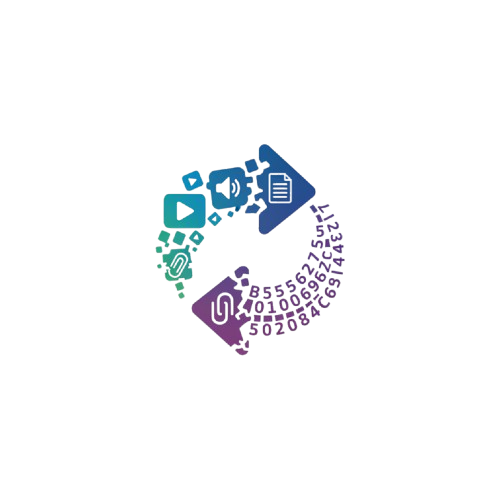

Conversor de Mídias para Base64
Converta imagens, vídeos, áudios e outros arquivos para Base64
Clique para selecionar arquivo
Suporta todos os formatos: imagens, vídeos, áudios, documentos, etc.
Arquivo:
Tipo:
Tamanho:
Preview
Resultado Base64
Copiar
Download .txt